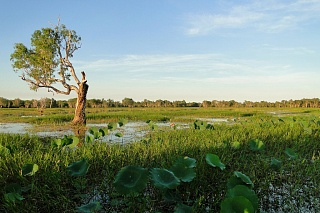

Национальный парк Какаду
Ровный тёплый климат, разнообразие природных условий в разных частях континента и длительная изолированность материка способствовали тому, что эволюционные процессы Австралии протекали не так бурно, как на других континентах. Благодаря этому до настоящего времени сохранились удивительные растения и животные, давно вымершие на других континентах. Из 12 тысяч видов растительности более 9 тысяч — эндемики, не встречающиеся больше нигде в мире. Из-за того, что климат континента большей частью засушливый, растения здесь сухолюбивые, среди них самые известные — эвкалипт и бутылочное дерево. Тропические леса севера богаты зонтичными акациями, огромными эвкалиптами (до ста метров в высоту!), бамбуком, разными видами фикусов и пальм. Восточные субтропические вечнозелёные леса поражают огромными двадцатиметровыми папоротниками и древовидным хвощом.
Большой размер континента обеспечивает климатическое разнообразие — здесь есть жаркие пустыни и прохладные побережья, снежные горы и тропические леса.
На просторах Австралии живут уникальные животные, они не только не существуют больше нигде на планете, они просто не выживут в другом месте, так как питаются растениями, произрастающими только здесь. Почти 90% представителей животного мира континента эндемичны. Из 235 видов млекопитающих половина — сумчатые. На материке до наших дней сохранились «живые ископаемые» — утконос и ехидна. Австралия – единственный континент, где нет ни копытных, ни обезьян. Здесь есть два выживших представителя хищников — тасманский дьявол, плотоядное сумчатое животное, и собака динго. Один из символов Австралии, тасманский дьявол, раньше жил на всей территории материка, но человек и динго вытеснили его на Тасманию.
Чрезвычайно богат мир пернатых Австралии, насчитывающий 720 видов птиц, из них почти половина — эндемики. Страусы эму, какаду, казуары, чёрные лебеди, птицы-медососы, райские птицы, лирохвосты, — признанные символы континента.
Здесь нет хищников, но есть немало других опасных представителей животного мира — в Австралии 65 видов ядовитых змей. Если вы увидите табличку, запрещающую купание, не пренебрегайте предупреждением — в прибрежных водах встречаются смертельно опасные медузы и акулы. К самым ядовитым животным планеты относятся синекольчатые осьминоги.
Появление человека не лучшим образом повлияло на флору и фауну, многие их уникальные представители были безвозвратно уничтожены. Но сейчас усилиями правительства ситуация кардинально меняется — строго контролируется соблюдение законов о защите окружающей среды. Создано много природоохранных парков и заповедников. Удалось восстановить некоторые виды животных и растений, бывших на грани исчезновения. Национальные парки дали толчок развитию туризма. Во многих природоохранных зонах созданы интереснейшие туристические маршруты, позволяющие прикоснуться к прошлому планеты и воочию наблюдать за жизнью дикой природы Австралии.